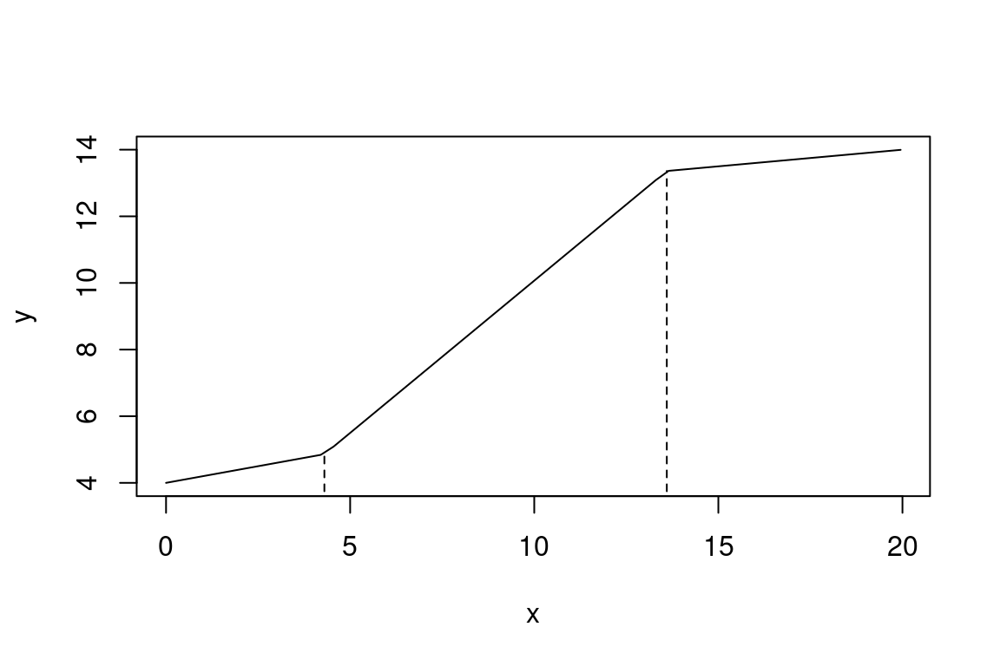

Baby steps in Bayes: Piecewise regression with two breakpoints
breakpoint regression
non-linearities
Bayesian statistics
Stan
In this follow-up to the blog post Baby steps in Bayes: Piecewise regression, I’m going to try to model the relationship between two continuous variables using a piecewise regression with not one but two breakpoints. (The rights to the movie about the first installment are still up for grabs, incidentally.)
The kind of relationship I want to model is plotted in Figure 1. According to some applied linguists, relationships similar to these underpin some aspects of language learning, but we don’t need to go into those discussions here.
Update (2023-08-06): When I reran the code in this blog post using newer versions of Stan and R, I ran into serious convergence issues. I have pulled down this blog post till I figure out how to fix these.